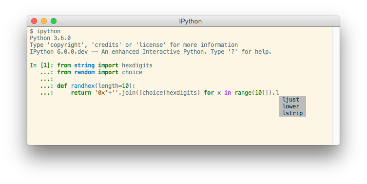

Jupyter and Python for Data Analysis
Tom Augspurger
2017-06-08
Topics
- Python: Brief overview
- Jupyter: Cross-language project supporting interactive data science
- Pandas: High-performance data structures for data analysis in Python
- Dask: Flexible parallel computing
Goals
- Not to teach you Python
- Explore cross-language tools
- Compare and contrast, learn from each other
A bit of History
- First release in 1991
- Popular as a "glue" language
- Benefiting from the rise of data science
- Powerful data-structures (NumPy, pandas)
- Visualization (matplotlib)
- Statistics and Machine Learning (scikit-learn, statsmodels, PyMC3, tensorflow, ...)
Trends
Jupyter
IPython: an interactive python shell 
Jupyter Notebook
- A web application
- More importantly, a file format
- Enables things like nbviewer
nbviewer
Jupyter Messaging Protocol
Kernels for > 50 languages (including R)
IRKernel
Demo
- Implements high-performance data structures for tabular data
- Many familiar operations (groupby, join)
- Handles missing data
Pandas
Demo
Dask
- Python has a great, diverse ecosystem for scientific computing
- but it's mostly restricted to a single core
Collections, DAGs, and schedulers

- Take a familiar API
- Translate operations to a task graph
- Have smart schedulers execute the tasks
- Built on years of work by Python's networking community
Dask Collections Build Task Graphs
Dask Schedulers Execute Task Graphs
1D-Array

>>> np.ones((15,))
array([ 1., 1., 1., 1., 1., 1., 1., 1., 1., 1., 1., 1., 1., 1., 1.])
>>> x = da.ones((15,), chunks=(5,))1D-Array

x = da.ones((15,), chunks=(5,))
x.sum()ND-Array - Sum

x = da.ones((15, 15), chunks=(5, 5))
x.sum(axis=0)ND-Array - Transpose

x = da.ones((15, 15), chunks=(5, 5))
x + x.TND-Array - Matrix Multiply

x = da.ones((15, 15), chunks=(5, 5))
x.dot(x.T + 1)ND-Array - Compound Operations

x = da.ones((15, 15), chunks=(5, 5))
x.dot(x.T + 1) - x.mean()ND-Array - Compound Operations

import dask.array as da
x = da.ones((15, 15), chunks=(5, 5))
y = (x.dot(x.T + 1) - x.mean()).std()Summary
- Jupyter for cross-language tools
- Pandas for high-performance data-structures
- Dask for parallelizing existing python workflows